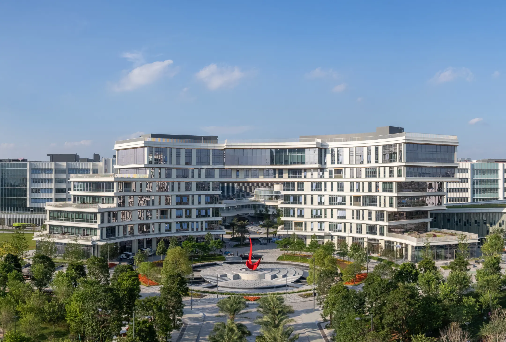

Brian Sheil
Professor
University of Cambridge
Physical AIPhysics-first AI and trustworthy digital twins for infrastructure.
In-person seminar
Physical AI and the Future of Multi-Robot Systems
Theme
The seminar explores how robots, infrastructure systems and intelligent agents can perceive, model and act together in real-world environments.
This one-day seminar brings together researchers from HKUST(GZ), HKUST and the University of Cambridge to examine how physical AI can move collaborative agents from isolated demonstrations toward dependable action in real environments. Through academic talks, industry sharing, posters and chaired discussion, the program connects sensing, reasoning, simulation and deployment around a practical question: how can robots, infrastructure and intelligent systems learn to coordinate with greater trust, adaptability and impact?
Speakers
Speakers are grouped by the morning and afternoon sessions so the profiles align directly with the tentative agenda. Click any profile for the longer bio notes.
Professor
University of Cambridge
Physical AIPhysics-first AI and trustworthy digital twins for infrastructure.

Assistant Professor
HKUST(GZ)
RoboticsComputer vision, video analytics and AI technologies for social good.

Research Associate
University of Cambridge
World modelRobotics, embodied intelligence and generative models for the built environment.

Assistant Professor
HKUST
Human-Robot InteractionConstruction robotics, safety and human-centered intelligent construction.

Research Associate
University of Cambridge
Physical interaction modelingDeep learning for bridge geometry, monitoring and infrastructure behavior.

Assistant Professor
HKUST(GZ)
Embodied AIMulti-agent information fusion and multimodal data analysis for intelligent systems.

Assistant Research Professor
University of Cambridge
Computer Vision3D reconstruction, semantic segmentation and urban digital twins.

Assistant Professor
HKUST(GZ)
Digital TwinDigital construction, human-robot collaboration and robotic fabrication.

Assistant Professor
HKUST(GZ)
Multi-agent collaborationMARL, multi-agent systems, edge intelligence and digital twins.

PhD Student
University of Cambridge
Electromagnetic physical AIPhD research at Cambridge around smart infrastructure and physical AI.
51 Company
To be confirmedCompany name, speaker and logo can be added once confirmed.
Program
Each invited talk is scheduled for 20 minutes plus 5 minutes of Q&A. Times remain tentative and can be adjusted once the final local arrangements are confirmed.
Poster Session
The seminar includes poster moments during lunch and coffee breaks for early-stage ideas, ongoing work and collaboration discussion.
We invite up to 10 posters related to physical AI, multi-robot systems, intelligent construction, digital twins, embodied AI, multi-agent collaboration and adjacent topics.
Please contact Mr. Jiale Li at jli022@connect.hkust-gz.edu.cn for poster submission and coordination.
Venue
The event is planned as an in-person seminar at HKUST(GZ), Nansha, Guangzhou.

E1, 4th Floor, DOIT Lab, HKUST(GZ), 1st Duxue Road, Nansha, Guangzhou.